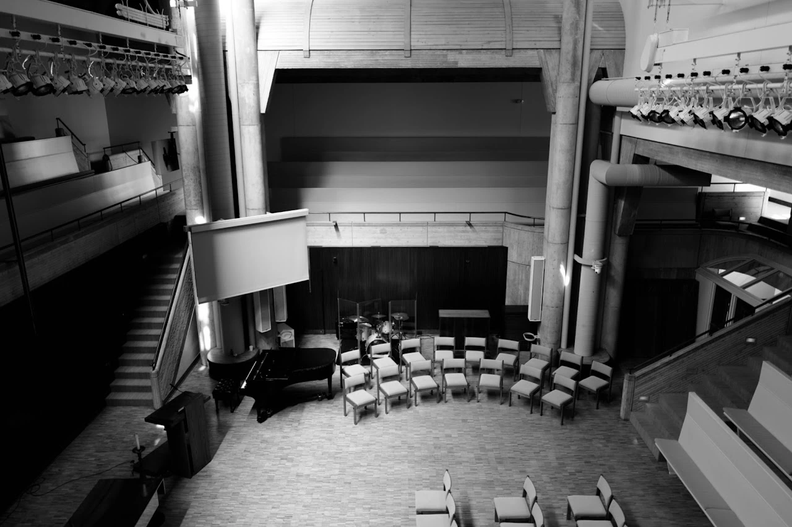

Photography series
Cathedrals of Light
 Image unavailable. Open the original photograph.
Image unavailable. Open the original photograph.

Image unavailable. Open the original photograph. Image unavailable. Open the original photograph.
Image unavailable. Open the original photograph.Photography series
Image unavailable. Open the original photograph.
Image unavailable. Open the original photograph.Image unavailable. Open the original photograph.